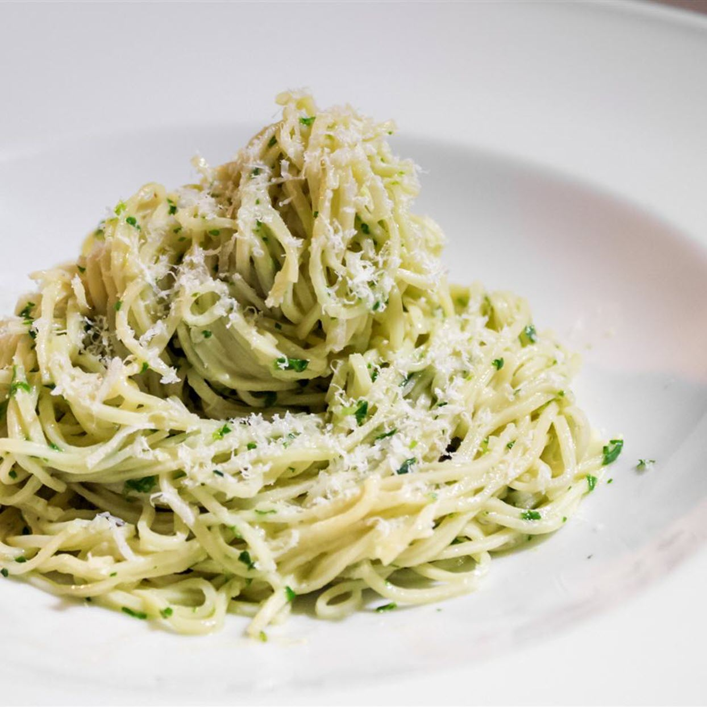

Pesto pasta

The pesto pasta are a simple yet delicious dish that you need to eat with the person you love
General info
- Preparation time:5 min
- Additional time:10 min
- Total time:15 min
- Servings:8
Ingredients
- ½ cup chopped onion
- 2 ½ tablespoons pesto
- 2 tablespoons olive oil
- 2 tablespoons (or much more!) grated Parmesan cheese
- 1 package pasta
- salt to taste
- ground black pepper to taste
Steps
- Cook pasta in large pot of boiling water until done. Taste along the cooking to get good aldete pasta. Drain.
- Meanwhile, heat the oil in frying pan over mendium low heat. Add pesto, onion, salt and pepper. Cook for about five minutes.
- In a large bowl, mix pesto mixture into pasta. Stir in grated cheese. Serve. Enjoy!
Home page